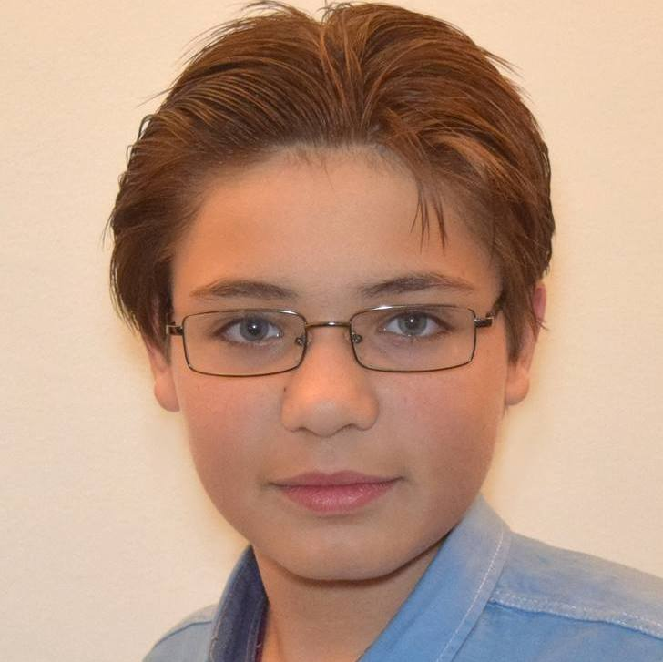

Преплитането на новите технологии в
бъдещото образование
бъдещото образование
За нас

- Софийска
математическа гимназия - Национален състезател
по информатика - Лектор в SoftUni
- Основател на TechEdu++
За нас (2)
- Природо-математическа
профилирана гимназия
гр. Монтана - Разработчик на приложения
с VR - Участник в SRS`17
- Отличен със специална награда
от спонсори на УчИМИ
Съдържание
Изкуствен интелект:
Виртуална реалност:
Образователна система:
Технологиите на практика в образованието:
- Какво е изкуствен интелект?
- Къде има приложение изкуствения интелект?
- Колко е достъпен изкуствения интелект?
Виртуална реалност:
- Какво е виртуална реалност?
- Къде има приложение виртуалната реалност?
- Колко е достъпна виртуалната реалност?
Образователна система:
- Какви видове образователни системи се прилагат в света/Европа/България?
- Какви предимства и недостатъци имат?
Технологиите на практика в образованието:
- Как може да използваме изкуствен интелект и виртуална реалност в обучителния процес?
- Какви предимства и недостатъци има?
Какво е изкуствен интелект?
- Наука за концепциите, които позволяват на компютрите да правят неща, които за хората изглеждат разумни
- Анализира обкръжаващата го среда
- Предприема действия, които увеличават възможността за постигане на определени цели

Къде има приложение изкуствения интелект?
- онлайн асистент, осигуряващ обслужване на клиенти на уебстраница
- „игрите“ на борсата и управление на собствеността
- при разпознаване на текст и глас
- медицинска диагностика
- в националната сигурност
- има огромен принос в развитието на сензорите на охранителните системи
Изкуствения интелект
Съществуват редица състезания и награди, които насърчават изследователската дейност в сферата на изкуствения интелект. Главните теми, които се насърчават са: обща машинна интелигентност, комуникативно поведение, извличане на данни, роботизирани коли, роботизиран футбол и други игри.

Колко е достъпен изкуствения интелект?

Какво е виртуална реалност?
- термин, обозначаващ нереален свят, създаван чрез компютърни системи и аудио-видео апаратура
- среда, която физически не съществува
- среда, създадена от информационните технологии

Къде има приложение виртуалната реалност?
- Обучение и тренировки
- Виртуално изкуство
- Културно наследство
- Машиностроене
- Архитектура и строителство
- Инфраструктура и пътно проектиране
- Терапия
- Наука
- Филми
Колко е достъпна виртуалната реалност?
- Цените на headset започват от няколко лева
- Всички нови смартфони поддържат VR
- Големи компании използват VR

Какви видове образователни системи
се прилагат в
света/Европа/България?
се прилагат в
света/Европа/България?
- Щвеция
- Швейцария
- Германия
Швеция
През 2011 год. е създаден нов Закон за народната просвета. Идеята му е да насърчава по-високо ниво на знания, свобода на избора и безопасност и сигурност на учениците. Създадени са и нови учебни програми. Въведена е и нова система за оценяване. Старата шведската система е заменена от нова скала за класификация с шест степени от А до F. С оценка от А до Е учениците преминават в по-горните класове, а F се приема като слаба оценка и с такъв резултат учащият се остава в същия клас.
От 2012 год. е в сила правилото децата да започват училище от 6-годишна възраст.
Швеция (2)
Ние: Преселихме се неотдавна в Швеция и имаме 11-годишна дъщеря, която искаме да запишем.
Той: Добре, попълнете този формуляр, трябва ни основна информация за дъщеря ви.
Ние: Знаете ли, тя не знае шведски.
Той: Добре, ще научи.
Ние: Може би първо ще трябва да работи по отделна програма?
Той: Има такава възможност, но ние смятаме, че най-добре и най-бързо ще научи шведски в клас с останалите деца. Всъщност, една учителка по шведски език ще работи по два часа дневно само с нея.
Ние: Какво трябва да вземе Леона за училище?
Той: Нищо. Учебниците, тетрадки, химикалки, гумички, острилки, линийки, триъгълници, боички... всичко ще получи тук. Трябва само да следи батерията на iPad-а й да не падне.
Ние: Значи трябва да купим iPad?
Той: О, не, iPad ще получи в училище, по-лесно да се справя с превода и ученето, но трябва само да внимава за батерията.
Ние: Трябвали да приготвяме храна за детето за училище?
Той: Няма нужда, закуската е от 7:30 ч., а обядът – 12 ч. Всеки ден имаме по две менюта – месно и вегетарианско.
Ние: Смятате ли, че вкъщи трябва да говорим на шведски с Леона?
Той: В никакъв случай. Вкъщи си говорете на хърватски. И не само това, би било добре веднъж седмично да учи хърватски като допълнително обучение.
Ние: Имате ли някой, който преподава хърватски език?
Той: В нашето училище нямаме, но допълнително обучение по хърватски език се провежда всеки четвъртък от 16 ч. в Ериксдалсколан.
Ние: Това е в другия край на града...
Той: Няма проблем, ще поръчаме такси.
Ние: Такси?
Той: Да, ще чака на паркинга всеки четвъртък в 15:45 ч. и ще я върне вкъщи веднага след часа.
Той: Добре, попълнете този формуляр, трябва ни основна информация за дъщеря ви.
Ние: Знаете ли, тя не знае шведски.
Той: Добре, ще научи.
Ние: Може би първо ще трябва да работи по отделна програма?
Той: Има такава възможност, но ние смятаме, че най-добре и най-бързо ще научи шведски в клас с останалите деца. Всъщност, една учителка по шведски език ще работи по два часа дневно само с нея.
Ние: Какво трябва да вземе Леона за училище?
Той: Нищо. Учебниците, тетрадки, химикалки, гумички, острилки, линийки, триъгълници, боички... всичко ще получи тук. Трябва само да следи батерията на iPad-а й да не падне.
Ние: Значи трябва да купим iPad?
Той: О, не, iPad ще получи в училище, по-лесно да се справя с превода и ученето, но трябва само да внимава за батерията.
Ние: Трябвали да приготвяме храна за детето за училище?
Той: Няма нужда, закуската е от 7:30 ч., а обядът – 12 ч. Всеки ден имаме по две менюта – месно и вегетарианско.
Ние: Смятате ли, че вкъщи трябва да говорим на шведски с Леона?
Той: В никакъв случай. Вкъщи си говорете на хърватски. И не само това, би било добре веднъж седмично да учи хърватски като допълнително обучение.
Ние: Имате ли някой, който преподава хърватски език?
Той: В нашето училище нямаме, но допълнително обучение по хърватски език се провежда всеки четвъртък от 16 ч. в Ериксдалсколан.
Ние: Това е в другия край на града...
Той: Няма проблем, ще поръчаме такси.
Ние: Такси?
Той: Да, ще чака на паркинга всеки четвъртък в 15:45 ч. и ще я върне вкъщи веднага след часа.
Швеция (3)
- насърчава по-високо ниво на знания
- свобода на избора
Швейцария
В Швейцария има различни видове училища за горното ниво на средното образование – академични, които подготвят учениците за постъпване в университет; професионални, които подготвят учениците за широка гама от професии; и общообразователни - в тях се предлага по-продължително обучение по общообразователните дисциплини.
Германия
Hauptschule:

- от 5-ти до 9-ти клас
- позволява да се продължи обучението в професионално училище до 18 години
Германия
Realschule:

- от 5-ти до 10-ти клас
- професионално училище, общообразователно училище или в гимназия
- съчетава общообразователната и практическа насочености
Германия
Gymnasium - до 13-ти клас (средно образование):
Вариант на традиционната форма е Berufliches Gymnasium, което включва и ориентация и специализация в областта на икономиката и технологиите в допълнение към стандартните академични предмети.
- възможност да се продължи образованието в университет или друг тип висше учебно заведение
- класическо образование
- след завършен 5-ти клас или спешно завършен 11-ти клас в Realschule
- класически и моделни езици, математика и природни науки
Вариант на традиционната форма е Berufliches Gymnasium, което включва и ориентация и специализация в областта на икономиката и технологиите в допълнение към стандартните академични предмети.
България
Недостатъци спрямо вече изброените системи:
Последвали проблеми:
- малък избор
- стари програми
- ниско ниво на практическа насоченост
Последвали проблеми:
- губи се интереса на учениците
- засилва се желанието им да „избягат“
Проучване сред
българските ученици
българските ученици
национално представително изследване, извършено преди началото на новата учебна година по поръчка на Центъра за приобщаващо образование, в рамките на програма "С поглед в бъдещето – училището има смисъл", реализирана с подкрепата на фондация "Велукс"
| Възможно или не | ||
| Интеракция | Индивидуален подход | Практически задачи |
Технологиите на практика в образованието?
| Изкуствен интелект | Виртуална реалност |
| Индивидуален подход | Интеракция |
Технологиите на практика в образованието?
(недостатъци)
*не винаги е вярно*
(недостатъци)
*не винаги е вярно*
- Не развива социални умения
- Не може да развива креативността
Фирми, които подкрепят проекта:
- VR Express
- iGreet
Тема за дискусия
Полезна ли е дигитализацията на 21ви век?